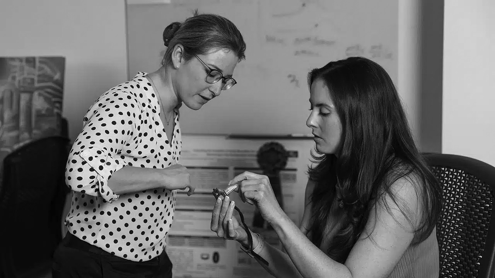

Work
I’m a PhD Candidate at Duke University, where I’m an NSF Fellow in the Traineeship for the Advancement of Surgical Technologies and a Duke Rhodes Information Initiative Fellow for Interdisciplinary Research. I completed my M.S in Biomedical Engineering at Duke, with a focus on Medical Device Design and Innovation. Previously, I was a Program Manager and Research Engineer at STR, building autonomous agents for U.S. defense and national security agencies.

Projects
-
Predicting postoperative complications at home
Deploying commercial wearables to cancer surgery patients to forecast complications during home recovery, from study design through modeling.
-
Digital Biomarkers for opioid relapse
Partnered across regulator, device maker, and nonprofit to develop a wearable-derived risk prediction engine for relapse in opioid use disorder.
-
Wearable metabolic monitoring
Leading development of wearable-based systems for tracking Metabolic Health, aimed at making diabetes management easier.
-
Pain and clinical modifiers in gynecological procedures
Investigating reported pain and the clinical factors that shape it across gynecological procedures.
-
Autonomous agents for command and control
Developed autonomous agents for command and control systems serving U.S. defense, intelligence, and national security agencies.
No projects match that tag.